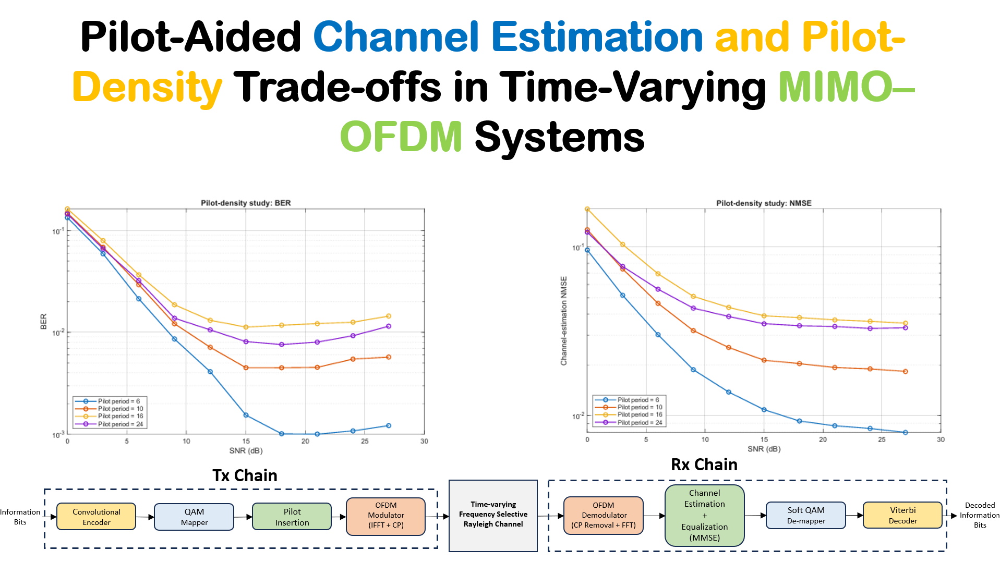

Course Project
Pilot-Aided Channel Estimation and Pilot-Density Trade-offs in Time-Varying MIMO–OFDM Systems
Chinmay Deo, Dr. Sudhan Majhi · IISc · 2025

Project summary
Abstract
The central question of this project is: “How do pilot periodicity and DFT-domain channel-estimation filtering affect reliability and payload efficiency in time-varying MIMO-OFDM?” The project implements configurable NTx×NRx spatial multiplexing, QPSK/16-QAM/64- QAM, dedicated full-band orthogonal pilots, a time-correlated Rayleigh tapped-delay- line channel, LS and DFT-linear estimators, ZF/MMSE equalization, convolutional cod- ing, soft Viterbi decoding, and reproducible Monte-Carlo studie